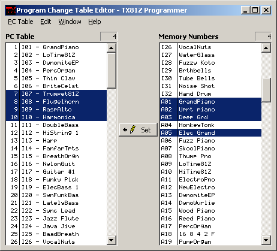

Back in the early days of MIDI, there were no bank change messages, so program changes were limited to 128 possibilities. The TX81Z can hold 184 patches: five banks of 32 voices and one bank of 24 performances. Thus the need for the program change table to map out which patch should be activated when the unit receives a particular program change message.
The program change table editor is pretty simple. The program change numbers are on the left and the memory numbers are the right. The patch names are only there to make it easy for you to see which patch each memory number is pointing to - only the memory numbers are stored in the table.
To set a program change number to activate a particular patch, select the program change number in the left window, select the patch you want to associate it with in the right window and click the Set button.
You can set multiple program change numbers at once. This works like copying multiple items from a library to the snapshot: the same number of items need to be selected in both for the Set button to become enabled. The indicators above the two lists will tell you how many items are selected in them. See list boxes for information on the different methods that can be used to select multiple items in a list box.